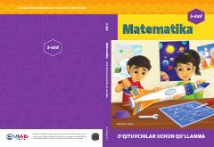

M33-sinf matematika fani o‘qituvchilari uchun metodik qo‘llanma.
Ushbu qo‘llanma 3-sinf matematika darslarini sifatli tashkil etish va o‘quvchilarning o‘zlashtirish darajasini baholash uchun mo‘ljallangan. Dastur USAID ko‘magida ishlab chiqilgan bo‘lib, o‘quvchilarga yo‘naltirilgan ta’lim yondashuvini qo‘llab-quvvatlaydi.